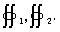
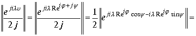
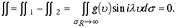
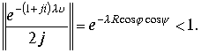
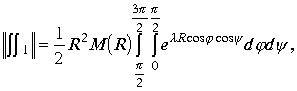
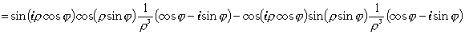

|
В. И. ЕЛИСЕЕВ ВВЕДЕНИЕ В МЕТОДЫ ТЕОРИИ
ФУНКЦИЙ ПРОСТРАНСТВЕННОГО КОМПЛЕКСНОГО ПЕРЕМЕННОГО |
|
1.7.4. Лемма К. Жордана в комплексном пространстве

Пусть имеем
и выполняются условия :1) функция
непрерывна в области пространства2) при где - верхняя полусфера Тогда 
Доказательство. Заменим в интеграле функцию синус ее представлением в пространстве
.
Так, что необходимо исследовать два интеграла Рассмотрим первый интеграл. Определим модуль функции

Пусть
принадлежит верхней половине полусферы . Для той части полусферы где аргументы изменяются в пределах ,будем иметь .Модуль функции
меньше единицы для той части верхней полусферы, для которой аргументы изменяются в интервалах Изолированное направление для верхнего полупространства характеризуется выражение переменной
Оценим интеграл по модулю
От элемента площади остался один модуль
.В силу условий леммы интеграл преобразится к виду
Заменим подынтегральную функцию ее максимальным значением в интервале интегрирования. Функция
на концах интервала интегрирования неопределена .Раскроем эту неопределенностьЭта величина является максимальной величиной функции в заданном интервале. Оценим величину функции в промежутках интервала интегрирования
ОбозначимТогда
Для случая , разложим экспоненциальную функцию в ряд и используя два первых члена разложения будем иметь..Если произведение
так как
Следовательно подынтегральная функция имеет максимальное значение равное единице. Поэтому интеграл
Если максимальное значение модуля функции то
то
Доказано, что
Все операции по первому интегралу переносятся во второй

Так, что
Следовательно интеграл для верхней полусферы

Проведем доказательство для изолированного направления в верхнем полупространстве. Интегралы
приобретают вид :.
Для интервала
имеем,
для интервала
имеем В верхней половине полусферы аргумент
Оценка модуля интегралов сводятся к оценки выражений

.
В пределах
.Таким образом, для оценки интегралов необходимо рассмотреть интегралыПреобразуем интегралы к повторным

Второй интеграл дает выражение
 .
.
Подынтегральные выражения на концах интервала имеют неопределенность. Раскрывая неопределенность получим
 ,
,
Подставляя эти оценки в исходные интегралы получим
. Если максимальное значение
Функции то Таким образом , доказана вторая часть леммы. Сумма интегралов доставляет доказательство леммы К . Жордана в пространстве  .
.
Проекция интеграла на плоскость Z даст интеграл
Если функция соответствует условиям Леммы и содержит ограниченное число полюсов в верхнем полупространстве , то по теореме Коши для многосвязных областей имеет место равенство
Но по лемме К. Жордана
поэтому имеем .
.
Пример .Вычислить интеграл
. Выберем вспомогательную функциюПодынтегральная функция не имеет особых точек в верхнем полупространстве. Кроме того ,по лемме Жордана. Для вычисления интеграла ,рассмотрим Лорановское разложение функции синус в окрестности точки 0 и оценим подынтегральную функцию
где
есть непрерывная функция в точке ноль. ПоэтомуПроекция интеграла на плоскость Z равна
.Окончательно получим
Преобразуем подынтегральное выражение. Введем

суммируя мнимую и действительную части получим
.
Отделяя действительную и мнимую часть в исходном интеграле получим :
Пример 3. Продолжение исследования вычисления примеров 1,2 пункта 1.7.1. Вычислим интеграл примера 2 . Представим интеграл в виде суммы двух равных частей
Знаменатели дроби выразим через произведение линейных множителей , на которые раскладывается квадратный трехчлен. На основании равенства
интеграл преобразуем к видуЕсли поверхность S , охватывает все изолированные точки, то применяя последовательно формулу Коши получим

Совпадает с результатом расчета примера 2 пункта 1.7.1.
Вычислим интеграл по другому варианту. Разложение квадратного трехчлена на простейшие множители в пространстве позволяет квадрат этого трехчлена записать в виде произведения четырех множителей. Интеграл примет вид
в этих выражениях каждый из интегралов содержит по четыре изолированные точки –полюса подынтегральной функции. Каждая из пространственных точек является полюсом второго порядка. Вычисление интеграла сводится к вычислению четырех интегралов . По теореме для многосвязных областей каждую изолированную пространственную точку окружим сферической поверхностью с радиусом стремящимся к нулю.
Мини оглавление:
[0], [1.1.1, 1.1.2, 1.1.3, 1.1.4, 1.1.5, 1.1.6, 1.1.7, 1.1.8, 1.2, 1.2.1, 1.2.2, 1.2.2.a, 1.2.2.b, 1.2.2.c, 1.2.2.d, 1.2.2.e, 1.2.2.f, 1.2.2.g, 1.2.2.h, 1.2.3, 1.3.1, 1.3.2, 1.3.3, 1.3.4, 1.3.5, 1.3.6, 1.4.1, 1.4.2, 1.5, 1.6, 1.7.1, 1.7.2, 1.7.3.1, 1.7.3.2, 1.7.3.3, 1.7.4.1, 1.7.4.2, 1.8.1], [2.1, 2.2],[3.1, 3.2, 3.3, 3.4.1, 3.4.2, 3.4.3, 3.4.4, 3.4.5],[4.1, 4.2, 4.3, 4.4],[5.1, 5.1.Рис.52, 5.2, 5.3, 5.4, 5.4.Т1, 5.4.Т2, 5.4.Т3, 5.5.1, 5.5.2, 5.5.3, 5.5.4],[6.1.1, 6.1.2, 6.2.1, 6.2.2, 6.2.3, 6.2.4, 6.2.5, 6.3, 6.4.1, 6.4.2, 6.5.1, 6.5.2],[7.1, 7.2, 7.3, 7.4, 7.5, 7.6, 7.7.1, 7.7.2, 7.8.1, 7.8.2, 7.8.3, 7.9],[8.1, 8.2.1, 8.2.2, 8.3, 8.4, 8.5, 8.6, 8.6.T1, 8.7, 8.8.1, 8.8.2, 8.8.3, 8.9.1, 8.9.2, 8.9.3, 8.10, 8.10.T2, 8.10.T3],[9.1, 9.2, 9.3, Рис.88, 89, 90, 91, 92, 93, 94, 95, 96, 97, 98, 99, 100],[10.1, 10.2, 10.3, 10.4, 10.5, 10.6, 10.7, 10.8, 10.9, 10.10, 10.11, 10.12, 10.13, 10.14, 10.15.1, 10.15.2, 10.16.1, 10.16.2, 10.17, 10.18],[11]
Размещенный материал является электронной версией книги: © В.И.Елисеев, "Введение в методы теории функций пространственного комплексного переменного", изданной Центром научно-технического творчества молодежи Алгоритм. - М.:, НИАТ. - 1990. Шифр Д7-90/83308. в каталоге Государственной публичной научно-технической библиотеки. Сайт действует с 10 августа 1998.
E-mail: mathsru@gmail.com